第01讲 生活中的立体图形
第01讲 生活中的立体图形

课程标准 | 学习目标 |
①例题图形的认识 ②点、线、面、体的关系 | 1．认识常见几何体的基本特征，能对这些几何体进行正确的识别和简单的分类； 2．通过丰富的实例，进一步认识点、线、面，了解有关点、线及某些平面图形的一些简单性质； |


知识点01 立体图形的认识
1.有些几何图形（如长方体、正方体、圆柱、圆锥、棱柱、棱锥、球等）的各部分不都在同一个平面内，这就是立体图形．
2.立体图形分类：除了按照柱体、锥体、球分类，也可以按照围成几何体的面是否有曲面划分：①有曲面：圆柱、圆锥、球等；②没有曲面：棱柱、棱锥等.
3.棱柱的有关概念及其特征:
①在棱柱中，相邻两个面的交线叫做棱，相邻两个侧面的交线叫做侧棱，棱柱所有侧棱长都相等，棱柱的上下底面的形状、大小相同，并且都是多边形；棱柱的侧面形状都是平行四边形.
②棱柱的顶点数、棱数和面数之间的关系：底面多边形的边数n确定该棱柱是n棱柱，它有2n个顶点，3n条棱，n条侧棱，有n+2个面，n个侧面.
【即学即练1】
1．（2023七年级上·全国·专题练习）将图中的几何体进行分类，并说明理由．
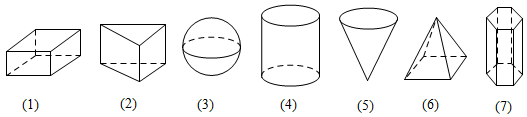
2．（23-24七年级上·全国·课后作业）如图四个几何体分别是三棱柱、四棱柱、五棱柱和六棱柱，三棱柱有5个面，9条棱，6个顶点，观察图形，填写下面的空．

(1)四棱柱有________个面，________条棱，________个顶点．
(2)六棱柱有________个面，________条棱，________个顶点．
(3)由此猜想 棱柱有________个面，________条棱，________个顶点．
棱柱有________个面，________条棱，________个顶点．
(4)你发现棱柱的面数、棱数与顶点数之间存在怎样的数量关系？
知识点02 点、线、面、体的关系
①体与体相交成面，面与面相交成线，线与线相交成点．
②点动成线，线动成面，面动成体．
③点、线、面、体组成几何图形，点、线、面、体的运动组成了多姿多彩的图形世界．
【即学即练1】
1．（23-24七年级上·山东青岛·阶段练习）下雨时汽车的雨刷把玻璃上的雨水刷干净，这说明 ；圆规在纸上划过会留下一个封闭的圆，这说明 ；在桌面上飞快的旋转一枚硬币就会看到一个球，这说明 ．
2．（23-24七年级上·河南郑州·阶段练习）如图，已知
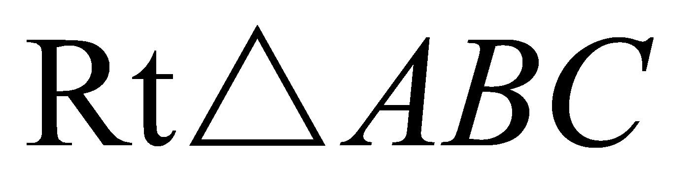
（即直角三角形 ）的两条直角边分别为
）的两条直角边分别为 ，
， ，以该三角形的一条直角边所在直线为轴，将其旋转一周，形成什么几何体？并求其体积．（结果保留
，以该三角形的一条直角边所在直线为轴，将其旋转一周，形成什么几何体？并求其体积．（结果保留 ）
）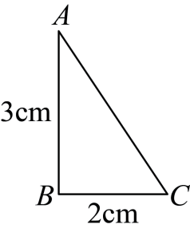
题型一：几何体的识别
【典例1】（23-24七年级上·浙江台州·期末）下列实物中，能抽象成圆柱体的是（ ）
A．
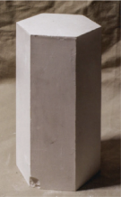
B． C． D．
C． D．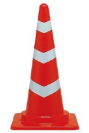
【变式1】（2024·河南周口·三模）分别观察下列几何体，其中有曲面的是（ ）
A． B．
B． C． D．
C． D．
【变式2】（23-24七年级上·陕西汉中·期末）下列标注的图形名称与图形不相符的是（ ）
A．
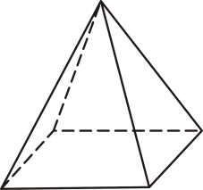
四棱锥B． 圆柱C．
圆柱C．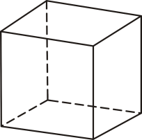
四棱柱D．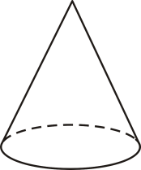
三棱锥【变式3】（23-24七年级上·福建泉州·阶段练习）下列图形属于棱柱的有（ ）

A．1个 B．3个 C．4个 D．5个
【变式4】（23-24七年级上·全国·课堂例题）把下列物体与其对应的立体图形连接起来：
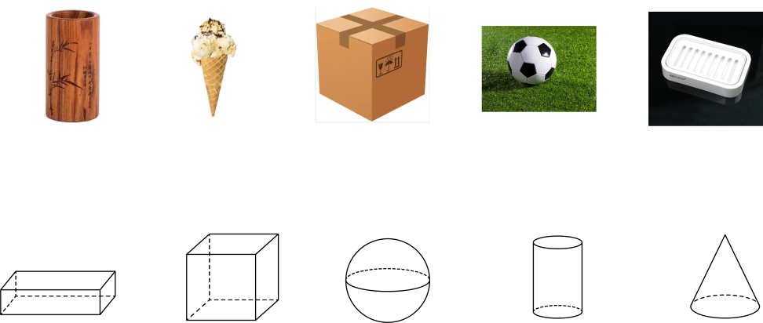
题型二：立体图形的分类
【典例2】（23-24七年级上·广东佛山·阶段练习）指出如图所示的立体图形中的柱体、锥体、球．

柱体：___________________________
锥体：___________________________
球体：___________________________（填序号）
【变式1】（22-23七年级上·广东佛山·阶段练习）如图，下列几何体，是柱体的有 ，球体的有 ．（填序号）

【变式2】下列是我们常见的几何体，按要求将其分类（只填写编号）．

(1)如果按“柱、锥、球”来分，柱体有______，锥体有______，球有______；
(2)如果按“有无曲面”来分，有曲面的有______，无曲面的有______．
【变式3】（23-24七年级上·全国·课堂例题）根据图回答问题：

(1)与图②具有共同特征的图形有哪些？说出共同特征是什么；
(2)其他图形中具有共同特征的图形有哪些？说出共同特征是什么．
题型三：几何体中的点、棱、面
【典例3】（23-24六年级上·山东烟台·期中）五棱柱是由 个面围成的，有 个顶点，共有 条棱．
【变式1】（23-24七年级上·山东菏泽·阶段练习）一个棱柱有12条棱，那么它的底面是 边形、共有 个顶点、 个面．
【变式2】（23-24七年级上·江西吉安·阶段练习）观察下列多面体，并把表格补充完整．
名称 | 三棱柱 | 四棱柱 | 五棱柱 | 六棱柱 |
图形 | 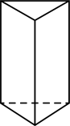 | 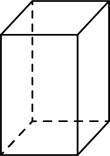 | 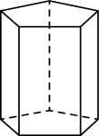 | 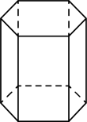 |
顶点数a | 6 | 10 | 12 | |
棱数b | 9 | 12 | ||
面数c | 5 | 8 |
(1)完成表格中的数据；
(2)根据表格中的规律判断，十四棱柱共有 个面，共有 个顶点，共有 条棱；
(3)若某个棱柱由30个面构成，则这个棱柱为 棱柱．
【变式3】15．（23-24七年级上·河南平顶山·阶段练习）仔细观察下面的正四面体、正六面体、正八面体，解决下列问题：
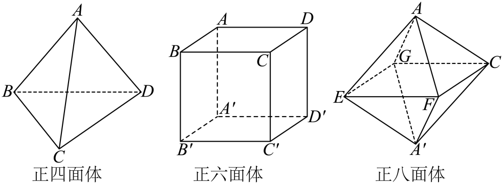
(1)填空：
①正四面体的顶点数 ______，面数
______，面数 ______，棱数
______，棱数 ______；
______；
②正六面体的顶点数______，面数______，棱数______；
③正八面体的顶点数______，面数______，棱数______；
(2)若将多面体的顶点数用v表示，面数用f表示，棱数用e表示，则v，f，e之间的数量关系可用一个公式来表示：________
题型四：动态认识点、线、面、体
【典例4】（23-24七年级上·河南许昌·期末）中国扇文化有着深厚的文化底蕴；历来中国有“制扇王国”之称． 如图，打开折扇时，随着扇骨的移动形成一个扇面，这种现象可以用数学原理解释为（ ）

A．点动成线 B．线动成面 C．面动成体 D．两点确定一条直线
【变式1】（23-24七年级上·山东德州·期末）朱自清的《春》一文里，在描写春雨时有“像牛毛，像细丝，密密地斜织着”的语句，这里用数学的眼光来看其实是把雨滴看成了 ，把雨看成 ，说明 （ ）
A．点；直线；点动成线 B．点；线；点动成线 C．线；面；线动成面 D．线；面；面动成体
【变式2】（23-24七年级上·江苏盐城·阶段练习）“鸣语既过渐细微，映空摇飏如丝飞”是唐代诗人杜甫作品《雨不觉》中的诗句，意为喧哗的雨已经过去，逐渐变得细微，映着天空摇漾如丝的细雨飘飞．诗中描写雨滴下来形成雨丝，用数学语言解释这一现象为 ．
【变式3】（23-24七年级上·贵州贵阳·阶段练习）直角三角形绕它的直角边旋转一周，形成了一圆锥体，说明了 ．（点动成线、线动成面、面动成体）
题型五：平面图形旋转所得立体图形
【典例5】（2024·陕西·中考真题）如图，将半圆绕直径所在的虚线旋转一周，得到的立体图形是（ ）

A． B．
B．
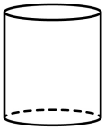
C．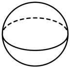
D．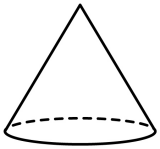
【变式1】（2024·陕西渭南·二模）下列图形分别绕虚线旋转一周，得到的立体图形是圆锥的是（ ）
A．
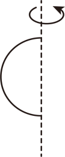
B．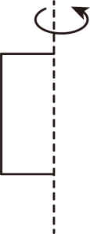
C． D．
D．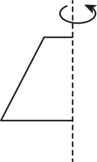
【变式2】（23-24七年级上·贵州贵阳·期中）如图是一个由平面图形绕虚线旋转得到的立体图形，则这个平面图形是（ ）
 A．
A． B． C． D．
B． C． D．
【变式3】观察图，把左边的图形绕着给定的直线旋转一周后可能形成的立体图形是（ ）
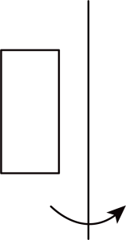
A．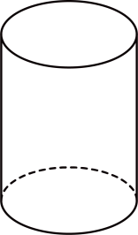
B． C．
C． D．
D．
【变式4】（23-24七年级上·山东滨州·期末）请把下图中的平面图形与其绕所画直线旋转一周之后形成的立体图形用线连接起来．
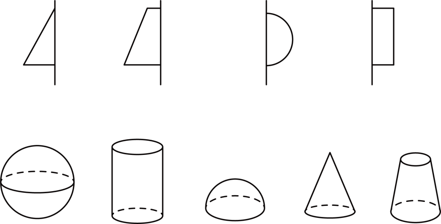
题型六：求平面图形旋转所得立体图形的面积或体积
【典例6】（23-24七年级上·陕西榆林·期中）如图是一张长方形纸片，长方形的长为 ，宽为
，宽为 ，若将此长方形纸片绕它的一边所在直线旋转一周，得到一个几何体．
，若将此长方形纸片绕它的一边所在直线旋转一周，得到一个几何体．

(1)这个几何体的名称是 ，这个现象用数学知识解释为 ；
(2)求得到的这个几何体的体积（结果保留 ）
）
【变式1】（2024·陕西西安·二模）如图，某酒店大堂的旋转门内部由三块宽为1.8m、高为3m的玻璃隔板组成．

(1)将此旋转门旋转一周，能形成的几何体是________，这能说明的事实是________（填字母）；
A．点动成线 B．线动成面 C．面动成体
(2)求该旋转门旋转一周形成的几何体的体积．（边框及衔接处忽略不计，结果保留 ）
）
【变式2】（2024·陕西渭南·二模）如图，将平面图形甲、乙分别绕轴l、m旋转一周，可以得到立体图形①、②，图形甲是直角边分别为a、2a的直角三角形，图形乙是边长为a的正方形．
(1)立体图形①的名称是_______；
(2)请问立体图形②比立体图形①的体积大多少？(用含a和π的式子表示， 
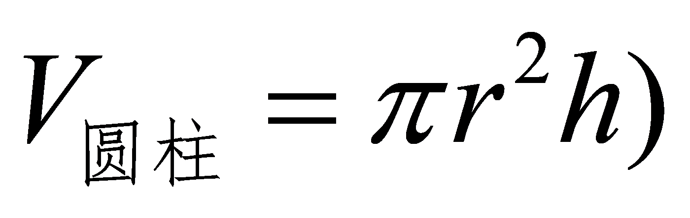
【变式3】（22-23七年级上·福建漳州·期中）如图，是某“粮仓”的示意图，
(1)该“粮仓”是由上面右侧的四幅图中的第______幅图旋转而成；
(2)请你求出该“粮仓”（单位： ）的体积．（结果保留
）的体积．（结果保留 ）
）

一、单选题
1．（23-24七年级上·贵州六盘水·期末）下列学习或生活中的物品，它的形状可以近似的看作圆柱体的是（ ）
A．
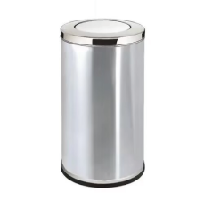
B． C． D．
D．
2．（23-24七年级上·山东德州·期末）朱自清的《春》一文里，在描写春雨时有“像牛毛，像细丝，密密地斜织着”的语句，这里用数学的眼光来看其实是把雨滴看成了 ，把雨看成 ，说明 （ ）
A．点；直线；点动成线 B．点；线；点动成线 C．线；面；线动成面 D．线；面；面动成体
3．（23-24七年级上·陕西咸阳·期中）以 为轴旋转一周后得到的立体图形是（ ）
为轴旋转一周后得到的立体图形是（ ）

A． B．
B． C．
C． D．
D．
4．（23-24七年级上·广东汕头·期末）有下列四个说法：①长方体与正方体都是四棱柱；②三棱锥的侧面都是三角形；③十棱柱有 个面，每个侧面都是长方形；④棱柱的每条棱长可以相等，其中正确的个数有（ ）
个面，每个侧面都是长方形；④棱柱的每条棱长可以相等，其中正确的个数有（ ）
A． 个 B．
个 B． 个 C．
个 C． 个 D．
个 D． 个
个
5．（23-24七年级上·河南郑州·期末）已知一个直棱柱共有 条棱，它的底面边长都是
条棱，它的底面边长都是 ，侧棱长都是
，侧棱长都是 ，则它的侧面积是（ ）
，则它的侧面积是（ ） ．
．
A． B．
B． C．
C． D．
D．
二、填空题
6．（23-24七年级上·山东枣庄·阶段练习）五棱柱有 条棱，有 个侧面， 个顶点．
7．（23-24七年级上·江苏南京·期中）如图所示的图形中为柱体的是 ，其中为圆柱的是 ，为棱柱的是 ．

8．（23-24七年级上·广东佛山·阶段练习）我们如果将一枚硬币竖立在桌面，击打一侧使其快速旋转，就会看到一个“球”，这种现象说明 ．
9．（23-24七年级上·辽宁沈阳·期末）如图所示的立体图形是由 个面组成的，其中有 个面是平的，有 个面是曲的．

10．（23-24七年级上·陕西西安·阶段练习）如图，加工一个长 ，宽
，宽 ，高
，高 的长方体铁块，选择面积最小的一个面，从该面的正中间打一个直径为
的长方体铁块，选择面积最小的一个面，从该面的正中间打一个直径为 的圆孔，一直贯穿到对面做成一个零件．则这个零件的体积是
的圆孔，一直贯穿到对面做成一个零件．则这个零件的体积是
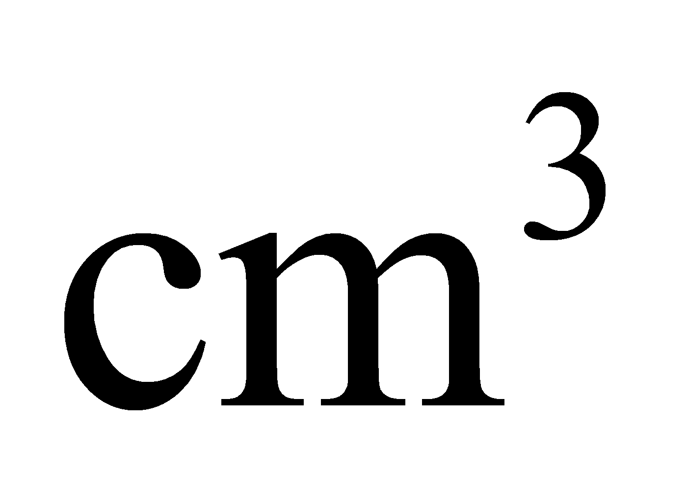
．（结果保留 ）
）
三、解答题
11．（23-24七年级上·广东佛山·阶段练习）将下列几何体进行分类．
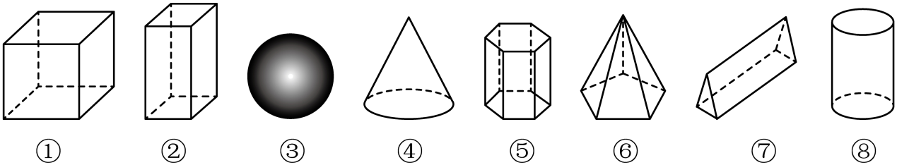
12．（23-24七年级上·全国·课后作业）如图所示的图形绕轴旋转一周，便能形成 中的某个几何体，请你用线把它们连起来．
中的某个几何体，请你用线把它们连起来．
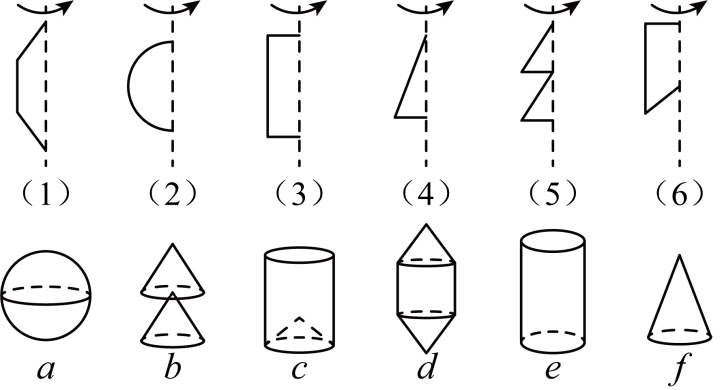
13．（23-24七年级上·陕西西安·期中）如图，这是一个五直棱柱，若它的底面边长都是，侧棱长都是 ，回答下列问题：
，回答下列问题：

(1)它有________个侧面，________个底面．
(2)它的所有侧面的面积之和是多少？
14．（23-24七年级上·山东枣庄·阶段练习）如图所示，在长方形 中，
中， ，
，
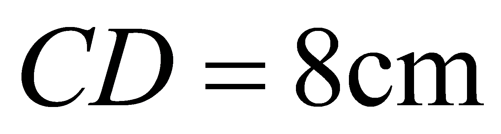
，现绕这个长方形的一边所在直线旋转一周得到一个几何体．请解决以下问题：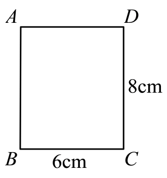
(1)写出旋转得到的几何体的名称？
(2)请求出旋转得到的几何体的体积．（结果保留 ）
）
15．（23-24六年级上·山东泰安·期中）推理猜测：
(1)三棱锥有________条棱，________个面；四棱锥有________条棱，________个面．
(2)________棱锥有30条棱，________棱锥有101个面；
(3)有没有一个多棱锥，其棱数是2024，若有，求出它有多少个面；若没有，说明为什么？
16．（23-24七年级下·福建漳州·期中）点动成线，线动成面，面动成体，立体之美，无处不在，需要我们会用数学的眼光观察现实世界．如图，直角三角形 ，绕边旋转一周所得的圆锥放到一个盛有水的圆柱形容器中，完全浸没，水面上升至，求未放入圆锥前圆柱形容器内的水面高度？
，绕边旋转一周所得的圆锥放到一个盛有水的圆柱形容器中，完全浸没，水面上升至，求未放入圆锥前圆柱形容器内的水面高度？
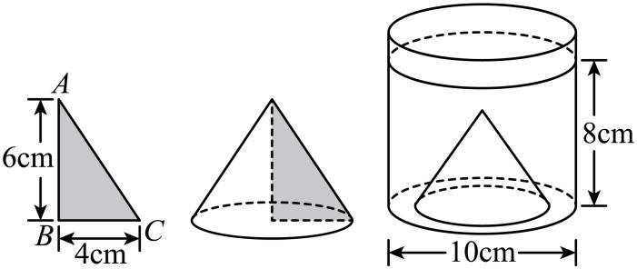
17．（23-24七年级上·甘肃兰州·期末）如图，某酒店大堂的旋转门内部由四块宽2m、高3m的长方形玻璃隔板组成．
(1)每扇旋转门旋转一周，能形成的几何体是 ，这体现了 动成体；
(2)求每扇旋转门旋转一周形成的几何体的体积（结果保留π）．

18．（23-24六年级下·全国·假期作业）如图所示是一些常见的多面体．
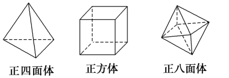

(1)数一下每一个多面体具有的顶点数（V）、棱数（E）和面数（F），并且把结果记入表中：
多面体 | 顶点数（V） | 面数（F） | 棱数（E） |
正四面体 | 4 | 4 | 6 |
正方体 | |||
正八面体 | |||
正十二面体 | |||
正二十面体 | 12 | 20 | 30 |
(2)观察表中数据，猜想多面体的顶点数（V）、棱数（E）和面数（F）之间的关系；
(3)若已知一个多面体的顶点数 ，棱数
，棱数 ，请你用（2）中的结果求这个多面体的面数．
，请你用（2）中的结果求这个多面体的面数．